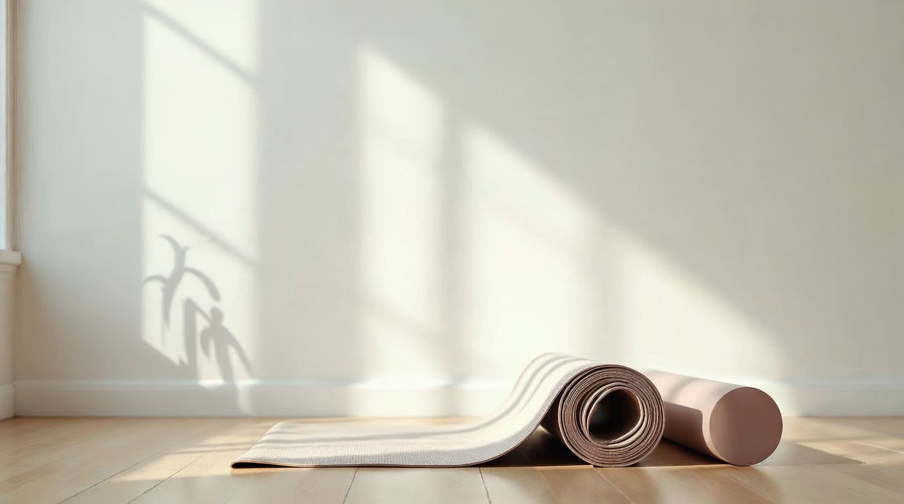
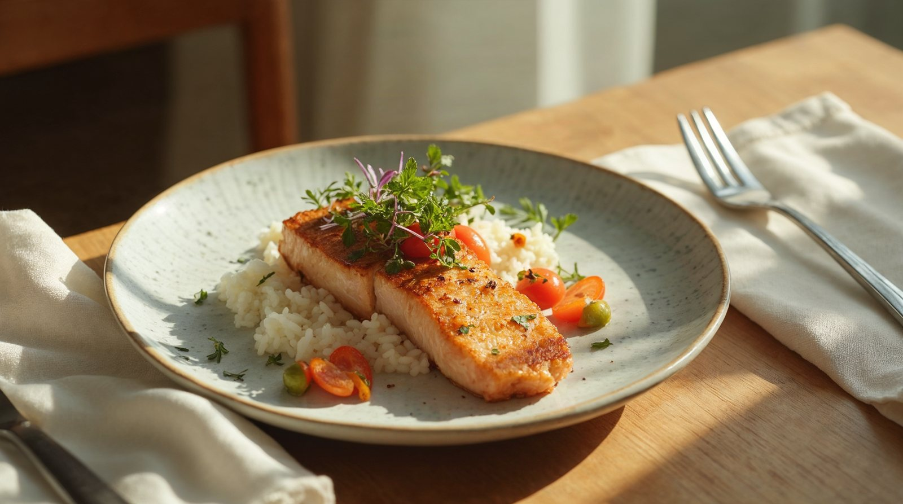
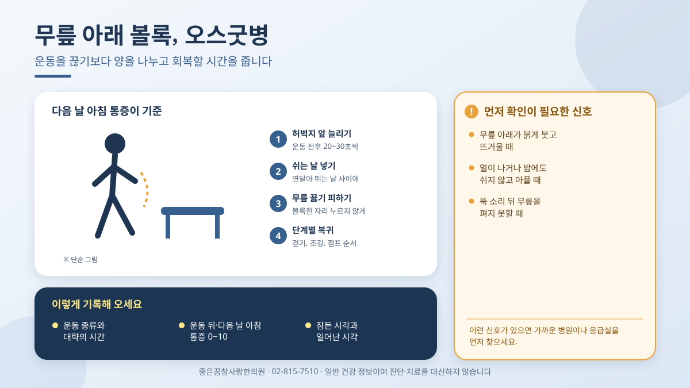

이종호 한의사 감수좋은꿈참사랑한의원 대표원장 (한의사 면허번호 19769)발행 2026-11-26 · 수정 2026-11-26
이 글의 차례
학교에서 돌아온 아이가 현관에 가방을 내려놓자마자 무릎을 문지릅니다. 바지를 걷어 보니 무릎뼈 바로 아래가 동그랗게 솟아 있고, 손가락으로 누르면 얼굴을 찡그립니다. 점심시간마다 축구를 하고, 저녁에는 학원 가는 길에 계단을 뛰어오르는 아이입니다.
부모님 마음이 먼저 놀랍니다. 뼈가 튀어나온 것 같은데 괜찮은 건지, 운동을 그만두게 해야 하는지, 키가 크는 데 문제가 생기지는 않는지 걱정이 꼬리를 뭅니다. 진료실에서 이 모습을 보면 저는 먼저 아이에게 어떤 운동을 얼마나 하는지부터 묻습니다.
키가 한창 크는 시기의 아이들에게 무릎 아래 볼록한 통증은 생각보다 흔합니다. 흔히 오스굿병, 또는 오스굿-슐라터병이라고 부릅니다. 이름은 낯설지만 구조를 알고 나면 왜 생기는지, 무엇을 조절하면 되는지가 한결 분명해집니다.
이 글에서는 오스굿병이 어떤 상태인지, 비슷해 보이는 다른 무릎 통증과 무엇이 다른지, 집에서 운동량을 어떻게 나누면 좋은지, 한의원에서는 무엇을 함께 살필 수 있는지를 차례로 말씀드리겠습니다.
오스굿병은 어떤 상태인가요
허벅지 앞쪽에는 무릎을 펴는 큰 근육이 있습니다. 이 근육은 무릎뼈를 지나 힘줄이 되어 정강이뼈 윗부분 앞쪽에 붙습니다. 무릎 아래 볼록한 그 자리가 바로 힘줄이 뼈에 닿는 곳입니다.
성장기 아이의 이 자리에는 아직 단단히 굳지 않은 성장판 부분이 있습니다. 뛰고 차고 점프할 때마다 허벅지 근육이 힘줄을 당기고, 힘줄은 아직 여린 뼈 끝을 반복해서 잡아당깁니다. 그 당김이 쌓이면 그 자리에 염증과 통증이 생기고, 뼈가 조금 도드라져 볼록하게 보이기도 합니다.
그래서 오스굿병은 다쳐서 생기는 병이라기보다 많이 쓰는 데서 생기는 통증에 가깝습니다. 한 번 크게 부딪혀서라기보다 몇 주, 몇 달 동안 같은 동작이 되풀이되면서 서서히 드러나는 경우가 대부분입니다.
한쪽 무릎에서 먼저 시작해 나중에 반대쪽도 아파지는 아이가 적지 않습니다. 잘 쓰는 발로 공을 차거나 도약할 때 주로 디디는 다리가 먼저 아픈 경우가 많아서, 어느 발을 주로 쓰는지도 함께 여쭙습니다.
왜 키가 크는 시기에 잘 생길까요
키가 크는 시기에는 뼈가 먼저 자라고 근육과 힘줄은 그 속도를 조금 늦게 따라갑니다. 뼈는 길어졌는데 허벅지 앞 근육은 아직 그만큼 늘어나지 못하니, 가만히 있어도 힘줄이 팽팽하게 당겨진 상태가 됩니다.
여기에 운동량이 겹칩니다. 축구, 농구, 배구, 태권도, 육상처럼 달리고 멈추고 뛰어오르는 운동은 무릎을 펴는 근육을 세게 씁니다. 학교 체육, 방과 후 운동, 주말 경기까지 이어지면 쉬는 날이 거의 없는 아이도 있습니다.
갑자기 운동량이 늘어난 시기에 잘 시작되는 것도 그래서입니다. 새로 운동부에 들어갔거나 대회를 앞두고 연습이 늘었거나, 방학 동안 매일 운동을 했을 때 통증이 드러나는 일이 흔합니다. 키가 쑥 자란 시기와 겹치면 더 그렇습니다.
비슷해 보이는 다른 무릎 통증과는 무엇이 다른가요
무릎이 아프다고 해서 모두 오스굿병은 아닙니다. 아픈 자리와 아픈 때를 나눠 보면 대략의 방향이 보입니다.
- 무릎뼈 바로 아래 정강이뼈 앞이 볼록하고 누르면 아프다: 오스굿병을 먼저 생각합니다
- 무릎뼈 아래쪽 끝, 힘줄 시작 부분이 아프다: 무릎뼈 아래 끝 쪽 성장판 통증이나 슬개건 쪽 통증을 함께 봅니다
- 무릎뼈 주변이 시큰하고 계단을 내려갈 때 아프다: 슬개대퇴통증을 함께 봅니다
- 밤에 양쪽 다리가 번갈아 아프고 낮에는 멀쩡하다: 성장통을 함께 생각합니다
오스굿병은 대개 운동할 때와 운동 직후에 아프고, 쉬면 가라앉는 흐름을 보입니다. 무릎을 꿇거나 볼록한 자리가 바닥에 닿을 때 특히 아파합니다. 반대로 쉬어도 계속 아프거나 밤에 잠을 깰 만큼 아프다면 다른 원인을 먼저 확인해야 합니다.
운동을 그만둬야 하나요
부모님이 가장 많이 물으시는 질문입니다. 대부분의 경우 운동을 완전히 끊기보다 양과 강도를 조절하는 쪽으로 이야기합니다. 아이에게 운동은 몸뿐 아니라 친구 관계와 자신감에도 중요한 부분이기 때문입니다.
기준은 통증입니다. 운동 중에 참을 만한 가벼운 불편이 있고 다음 날 아침에 거의 가라앉는다면 양을 조금 줄여 이어 갈 수 있습니다. 운동 중에 절뚝거리거나, 다음 날까지 통증이 남거나, 점점 더 아파진다면 그 운동은 잠시 쉬고 무릎에 부담이 덜한 움직임으로 바꿉니다.
쉬는 동안에도 수영이나 상체 운동, 가벼운 자전거처럼 무릎을 세게 펴지 않는 활동은 대개 이어 갈 수 있습니다. 통증이 가라앉으면 짧은 시간부터 다시 시작해 몇 주에 걸쳐 원래 양으로 돌아갑니다. 코치나 체육 선생님께도 상황을 알려 두시면 조절이 훨씬 수월합니다.

쉬었다가 다시 운동을 늘릴 때는 어떤 순서로 하나요
통증이 가라앉으면 아이들은 대개 바로 예전처럼 뛰고 싶어 합니다. 그런데 쉬는 동안 근육은 조금 약해지고 굳어 있어서, 한꺼번에 돌아가면 통증이 쉽게 되살아납니다. 그래서 단계를 나눠 돌아가기를 권합니다.
먼저 일상 걷기와 계단에서 통증이 없는지 확인합니다. 그다음 가벼운 조깅을 짧게 해 보고, 다음 날 아침까지 괜찮으면 시간을 조금씩 늘립니다. 방향을 바꾸며 뛰기, 공 차기, 점프는 그 뒤에 더합니다.
각 단계는 며칠씩 머물며 다음 날 아침 상태를 기준으로 넘어갑니다. 다음 날 통증이 다시 올라오면 한 단계 전으로 돌아가면 됩니다. 이렇게 하면 아이도 자기 몸의 신호를 읽는 법을 조금씩 익히게 됩니다.
볼록한 뼈는 없어지나요
통증은 성장이 마무리되면서 대개 함께 가라앉습니다. 다만 이미 도드라진 뼈의 모양은 그대로 남는 경우가 있습니다. 볼록하게 남아도 통증이 없고 움직임에 불편이 없다면 크게 걱정하지 않으셔도 되는 경우가 많습니다.
성장기 동안에는 좋아졌다가도 운동량이 늘거나 키가 다시 크는 시기에 통증이 되살아나기도 합니다. 그래서 한 번 가라앉았다고 끝났다고 보기보다, 성장이 이어지는 동안은 운동량과 스트레칭을 함께 챙기는 습관을 들이는 것이 좋습니다.
집에서 해 볼 수 있는 간단한 확인
진료실에 오시기 전에 집에서 몇 가지를 살펴보시면 상태를 가늠하는 데 도움이 됩니다. 아이가 아파하면 바로 멈추고, 억지로 동작을 시키지는 마세요.
- 무릎뼈 아래 볼록한 자리를 손가락으로 살짝 눌렀을 때 아픈지
- 엎드려 누운 자세에서 발뒤꿈치가 엉덩이에 얼마나 가까이 닿는지
- 양쪽 무릎 아래를 나란히 놓고 볼록한 정도가 다른지
- 한 발로 서서 가볍게 무릎을 굽혔다 펼 때 아픈 쪽이 있는지
엎드려 발뒤꿈치를 엉덩이 쪽으로 당겼을 때 한 뼘 넘게 떨어진다면 허벅지 앞 근육이 많이 굳어 있다는 신호일 수 있습니다. 이 거리를 일주일에 한 번 재어 적어 두면 스트레칭이 잘 되고 있는지 확인하는 기준이 됩니다.

부모님이 함께 챙겨 주시면 좋은 것
성장기 아이들은 아파도 친구들과 계속 뛰고 싶어서 통증을 작게 말하는 경우가 많습니다. 반대로 걱정하는 부모님 앞에서는 크게 말하기도 합니다. 그래서 말보다 행동을 보시는 것이 정확할 때가 있습니다.
계단을 오를 때 난간을 잡는지, 쪼그려 앉기를 피하는지, 운동하고 온 날 무릎을 자주 문지르는지를 지켜봐 주세요. 이런 작은 모습이 통증의 크기를 알려 주는 단서가 됩니다.
잠과 식사도 회복의 큰 축입니다. 운동량이 많은 시기에는 단백질이 들어간 반찬과 충분한 물, 일정한 잠 시각을 챙겨 주세요. 늦게까지 휴대폰을 보다 잠이 줄면 근육이 풀릴 시간도 함께 줄어듭니다.
먼저 이렇게 여쭙니다
처음 오시면 아이와 부모님께 대략 이런 순서로 여쭙니다. 아이가 직접 대답할 수 있도록 미리 이야기 나눠 오시면 좋습니다.
- 일주일에 어떤 운동을, 몇 번, 한 번에 얼마나 하나요?
- 언제부터 아팠고, 그 무렵 운동량이 늘었거나 키가 많이 자랐나요?
- 운동할 때, 운동 뒤, 다음 날 아침 가운데 언제 가장 아픈가요?
- 무릎을 꿇거나 계단을 오를 때, 쪼그려 앉을 때는 어떤가요?
- 한쪽만 아픈가요, 양쪽 모두 아픈가요?
- 최근 넘어지거나 부딪힌 일이 있었나요?
잠은 충분히 자는지, 아침밥은 먹고 가는지도 함께 여쭙니다. 성장기 아이는 운동량에 비해 잠과 식사가 부족하면 회복이 늦어지기 쉽습니다.
일상에서 먼저 해 볼 수 있는 것
오스굿병 관리의 중심은 당기는 힘을 줄이고 회복할 시간을 주는 것입니다. 거창한 것보다 매일 할 수 있는 작은 습관이 오래갑니다.
- 운동 전후 허벅지 앞쪽 스트레칭을 천천히 20~30초씩 하기
- 허벅지 뒤쪽과 종아리도 함께 늘려 무릎 주변 균형 맞추기
- 운동이 끝난 뒤 아픈 자리에 차가운 찜질을 10분 남짓 하기
- 무릎을 꿇는 자세나 볼록한 자리가 바닥에 닿는 자세 피하기
- 연달아 운동하는 날 사이에 쉬는 날 넣기
- 쿠션이 있는 운동화를 신고, 딱딱한 바닥에서 점프 줄이기
허벅지 앞 스트레칭은 옆으로 누워 위쪽 발목을 손으로 잡고 발뒤꿈치를 엉덩이 쪽으로 천천히 당기는 방법이 무리가 적습니다. 반동을 주지 않고, 통증이 아니라 당기는 느낌까지만 합니다.
차가운 찜질은 운동 직후 열감이 있을 때 도움이 될 수 있습니다. 얼음을 피부에 바로 대지 말고 얇은 수건으로 감싸서 대 주세요. 저녁에 뻐근함만 남은 날에는 따뜻한 샤워로 근육을 풀어 주는 편이 편하다는 아이도 있습니다.
한의원에서 함께 살필 수 있는 경우
- 운동 뒤 무릎 아래 통증이 며칠씩 남는 경우
- 허벅지 앞과 뒤 근육이 유난히 굳어 있어 스트레칭이 잘 되지 않는 경우
- 통증 때문에 걸음걸이가 한쪽으로 치우친 경우
- 잠이 부족하고 쉽게 지쳐 회복이 늦는 경우
- 다시 운동을 시작할 때 양을 어떻게 늘릴지 함께 정하고 싶은 경우
좋은꿈참사랑한의원에 오시면 먼저 아래 '먼저 확인이 필요한' 신호가 없는지부터 봅니다. 그다음 무릎 아래와 허벅지 근육을 직접 만져 보며 아픈 자리와 굳은 자리를 확인하고, 걷는 모습과 쪼그려 앉는 모습을 함께 봅니다.
진찰한 내용을 바탕으로 침이나 온열 관리, 집에서 할 스트레칭 가운데 지금 상태에 맞는 것을 정합니다. 아이의 나이와 체격, 겁내는 정도를 고려해 방법과 강도를 조절합니다. 한약은 잠과 식사, 피로가 함께 문제일 때 아이가 먹고 있는 약이 있는지 확인한 뒤 신중히 상의합니다.
뼈 사진이 필요해 보이거나 다른 원인이 의심되면 정형외과 진료를 함께 권합니다. 한의원 진료는 아이가 운동을 이어 가는 동안 몸의 회복을 곁에서 돕는 역할이라고 생각해 주시면 됩니다.
이렇게 기록해 오시면 상담이 쉬워집니다
아이의 통증은 하루하루 달라서, 짧은 기록이 큰 도움이 됩니다. 2주 정도 달력에 간단히 표시해 보세요.
- 운동한 날과 운동 종류, 대략의 시간
- 운동 중, 운동 뒤, 다음 날 아침 통증을 0~10으로
- 무릎을 꿇거나 계단에서 아팠던 날
- 스트레칭이나 찜질을 한 날
- 잠든 시각과 일어난 시각
기록을 나란히 놓고 보면 어떤 운동 뒤에 더 아픈지, 쉬는 날이 있으면 얼마나 가라앉는지가 보입니다. 그 흐름이 운동량을 다시 짜는 출발점이 됩니다.
성장기 통증과 함께 지내는 법
오스굿병은 아이 몸이 빠르게 자라고 있다는 표시이기도 합니다. 운동을 좋아하는 아이일수록 잘 생기니, 아이가 잘못해서 생긴 일이 아니라는 점을 먼저 알려 주세요. 아픈 무릎 때문에 주눅 들지 않도록 하는 것도 회복의 한 부분입니다.
이번 주에는 운동 뒤 스트레칭 하나와 쉬는 날 하루, 이 두 가지만 정해 보세요. 다음에 오시면 2주 기록을 함께 펼쳐 놓고 다음 걸음을 정하겠습니다.
이런 증상은 먼저 확인이 필요합니다
- 무릎 아래가 붉게 부어오르고 만지면 뜨거우며 열이 나거나 밤에도 쉬지 않고 아픈 경우
- 점프나 넘어진 뒤 뚝 하는 느낌과 함께 무릎을 펴지 못하거나 발을 디디지 못하는 경우
이런 신호가 있으면 한의원보다 가까운 병원이나 응급실을 먼저 찾으세요.
함께 읽으면 좋은 글
- 아이가 밤마다 다리가 아프다고 할 때, 성장통인지 어떻게 살피나요?
- 무릎 앞쪽, 무릎뼈 주변이 시큰한 슬개대퇴통증은 어떻게 살피나요?
- 무릎뼈 아래가 아파 점프나 쪼그려 앉기가 불편할 때는 어떻게 살피나요?
- 운동하고 이틀째에 더 쑤시는 지연성 근육통은 왜 생기고, 회복은 어떻게 살피나요?
- 운동을 꾸준히 하는 분은 진료 전에 무엇을 알려야 하나요?

여쭙는 것
- 일주일에 어떤 운동을, 몇 번, 한 번에 얼마나 하나요?
- 언제부터 아팠고, 그 무렵 운동량이 늘었거나 키가 많이 자랐나요?
- 운동할 때, 운동 뒤, 다음 날 아침 가운데 언제 가장 아픈가요?
생활에서 해 볼 것
- 운동 전후 허벅지 앞쪽 스트레칭을 천천히 20~30초씩 하기
- 허벅지 뒤쪽과 종아리도 함께 늘려 무릎 주변 균형 맞추기
- 운동이 끝난 뒤 아픈 자리에 차가운 찜질을 10분 남짓 하기
한의원에서 함께 살필 것
- 운동 뒤 무릎 아래 통증이 며칠씩 남는 경우
- 허벅지 앞과 뒤 근육이 유난히 굳어 있어 스트레칭이 잘 되지 않는 경우
- 통증 때문에 걸음걸이가 한쪽으로 치우친 경우
먼저 확인이 필요한 신호
- 무릎 아래가 붉게 부어오르고 만지면 뜨거우며 열이 나거나 밤에도 쉬지 않고 아픈 경우
- 점프나 넘어진 뒤 뚝 하는 느낌과 함께 무릎을 펴지 못하거나 발을 디디지 못하는 경우
한눈에 보는 표
| 구분 | 핵심 |
|---|---|
| 여쭙는 것 | 일주일에 어떤 운동을, 몇 번, 한 번에 얼마나 하나요? 언제부터 아팠고, 그 무렵 운동량이 늘었거나 키가 많이 자랐나요? |
| 생활에서 해 볼 것 | 운동 전후 허벅지 앞쪽 스트레칭을 천천히 20~30초씩 하기 허벅지 뒤쪽과 종아리도 함께 늘려 무릎 주변 균형 맞추기 |
| 한의원에서 함께 살필 것 | 운동 뒤 무릎 아래 통증이 며칠씩 남는 경우 허벅지 앞과 뒤 근육이 유난히 굳어 있어 스트레칭이 잘 되지 않는 경우 |
| 먼저 확인이 필요한 신호 | 무릎 아래가 붉게 부어오르고 만지면 뜨거우며 열이 나거나 밤에도 쉬지 않고 아픈 경우 점프나 넘어진 뒤 뚝 하는 느낌과 함께 무릎을 펴지 못하거나 발을 디디지 못하는 경우 |
자주 묻는 질문
오스굿병이 있으면 키가 덜 크나요?
무릎 아래 힘줄이 붙는 자리의 통증이라 키 성장 전체를 막는 것으로 보지는 않습니다. 다만 아파서 잠을 설치거나 식사가 부실해지면 회복이 늦어질 수 있으니 잠과 식사를 함께 챙겨 주세요.
아파도 시합에 나가도 되나요?
운동 중 절뚝거리거나 다음 날까지 통증이 남는다면 쉬는 쪽을 권합니다. 가벼운 불편 정도라면 시간과 강도를 줄여 참여할 수 있는지 코치 선생님과 함께 정해 보세요.
무릎 보호대를 하면 도움이 되나요?
무릎 아래 힘줄을 살짝 눌러 주는 띠 형태 보호대가 운동 중 불편을 덜어 준다는 아이도 있습니다. 보호대만 믿고 운동량을 늘리기보다 쉬는 날과 스트레칭을 함께 챙기는 것이 중요합니다.
아이도 침 치료를 받을 수 있나요?
진찰 뒤 아이의 상태와 겁내는 정도를 보고 방법을 정합니다. 침이 무섭다면 온열 관리나 스트레칭 지도처럼 부담이 적은 방법부터 시작할 수 있습니다.
볼록한 뼈가 남으면 수술해야 하나요?
볼록하게 남아도 통증과 불편이 없다면 대개 지켜봅니다. 성장이 끝난 뒤에도 무릎을 꿇을 때 계속 아프다면 정형외과에서 자세히 확인해 보시길 권합니다.
좋은꿈참사랑한의원은 재진 때 지난번 이야기부터 이어서 여쭙니다. 진료시간과 예약은 오시는 길에서 확인하세요.
어디서 상담받을 수 있나요?
좋은꿈참사랑한의원은 서울 동작구 만양로2길 2 신성빌딩 3층·5층(서울 동작구 상도동, 7호선 상도역 3번 출구 근처)에 있습니다. 한의사 3명(이종호 대표원장, 조영기 수석진료원장, 정원영 진료원장)이 진료합니다. 진료시간은 평일 09:30~20:00(점심 13:00~14:00), 토·일·공휴일 09:30~15:00이며, 방문 전 전화로 확인을 권합니다. 예약은 네이버 예약, 카카오톡 상담, 전화 02-815-7510로 받습니다.
이 글은 일반적인 건강 정보이며 개인의 진단이나 치료를 대신하지 않습니다. 증상이 있거나 복용 중인 약이 있다면 진료를 통해 확인하세요. 치료 효과는 개인마다 다를 수 있습니다.
작성 기준: 일반적으로 알려져 있는 건강 정보를 참고해 정리했습니다(대표원장 감수). 증상 기록은 1~2주 동안 하루 1회, 비슷한 시간에 적어 오시면 지난 상태와 비교하기 쉽습니다.